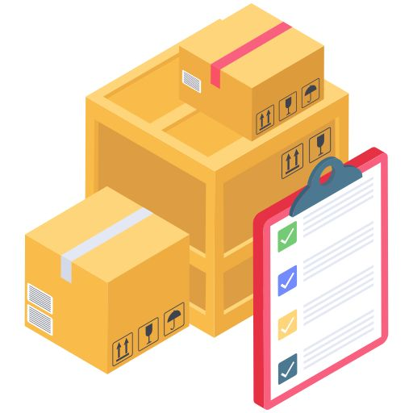

Estudante de Desenvolvimento de Sistemas focado em desenvolvimento Full Stack e na criação de aplicações modernas e funcionais.
Conhecimentos em JavaScript, HTML, CSS, C, Java, Python e MySQL.
Dowload CV
Sobre Mim
Olá me chamo Kauan Fernando, tenho 19 anos, atualmente estou cursando o curso técnico de Desenvolvimento de Sistemas, por fora faço curso de Python pela Universidade Estadual de Feira de Santana. Possuo conhecimentos em algumas linguagens de programação como Java e C, além de possuir lógica de programação.
No curso até o momento desenvolvi alguns mini projetos como a criação de um robô autônomo junto a minha equipe com o objetivo de lutar sumô, o desenvolvimento de sistemas simples em terminal como o de cadastro envolvendo temas como estoque de produtos e fichas escolares, e a criação de um jogo da forca.
Skills
C
Médio
Java
Básico
Python
Básico
HTML
Médio
CSS
Básico
Javascript
Básico
MySQL Sever
Básico
Projetos
Jogo da Forca
Jogo da forca com funções de criar palavra própria ou usar palavras pré-cadastradas no código. Prática desenvolvida usando a linguagem C.
VisualizarPOO: Cadastro de Produtos

Prática em Java com a finalidade de cadastro e armazenamento de produtos. Com opções de cadastrar, listar, atualizar e remover.
VisualizarPOO: Estacionamento
Prática em Java utilizando POO para gerenciar veículos, algumas de suas funcões sendo estacionar e gerar o valor a ser pago.
Visualizar